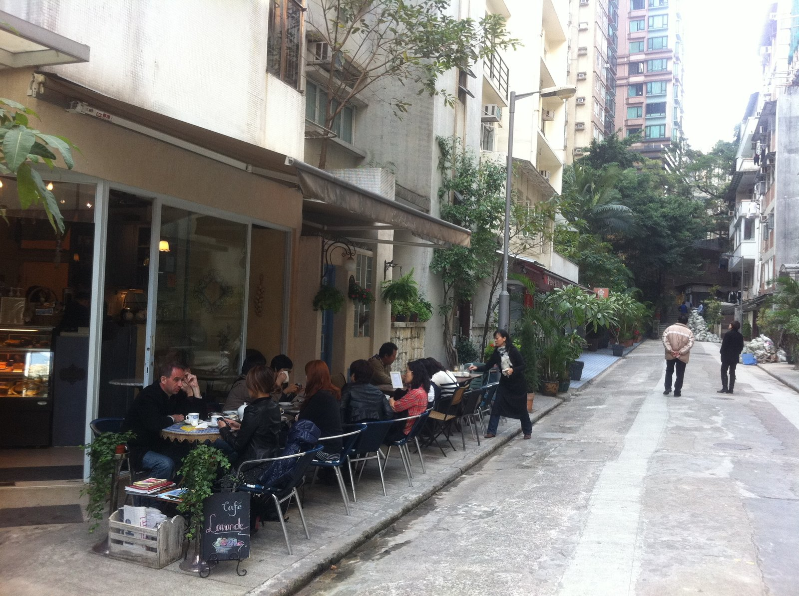
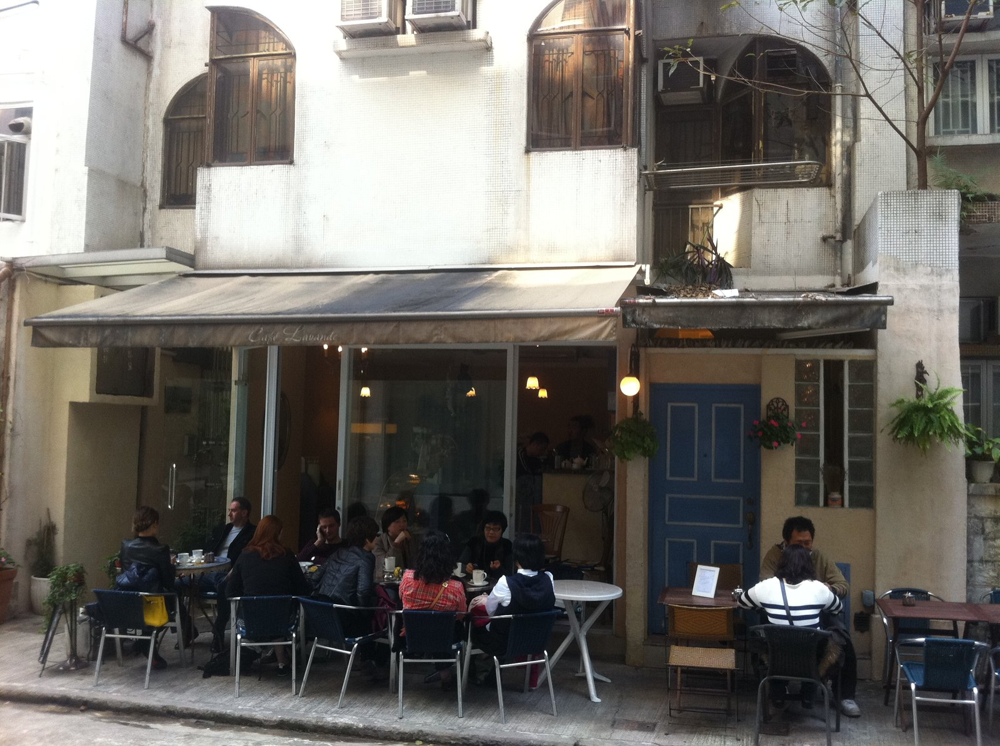

Piece it together.
Where did the day go?Scroll to piece it together
Photos, timestamps and places, scattered across your phone. Pieced back into the order they happened.
Reference photo: Kardamos beach, Gökçeada, by Ggia, CC BY-SA 3.0
A phone holds hundreds of photos with no order, no names and no story. No manual albums. No tagging. Just photos in, and a day out.
How the pieces get found.
Five stages. Each one shows the bar it has to clear. Scroll sideways.
Extract
Reads time and GPS out of the photo file itself.

Cluster
Groups photos into events by time and place. Two frames, one street, one event.Recognize
Finds every face and groups them by person.Caption
Describes each event in a sentence.Reconstruct
Fuses events, places and people into one timeline.One day, in order.
Measured on faces it never saw.
Face verification accuracy, up from 59% before we fine-tuned it. 200 pairs from 29 held-out people.
Pairwise precision grouping 230 faces by person. Recall is 80%: it splits a person before it merges two.
Model trained by us, out of five stages. The rest is classical logic or a pretrained model used as-is.
The limits: weaker on children, and recall is lower on real phone photos.
What comes out the other side.
The example this project was scoped around: a day scattered across four unrelated fragments, reassembled. Hover a row to see the photo.
Built withEXIFDBSCANFaceNetCelebAAgglomerativeBLIPFlask
Now try it on your own photos.
Upload a few real photos and watch the actual pipeline run, EXIF extraction, reverse geocoding, event clustering and captioning, live, on a dedicated page.
Open the live tool →